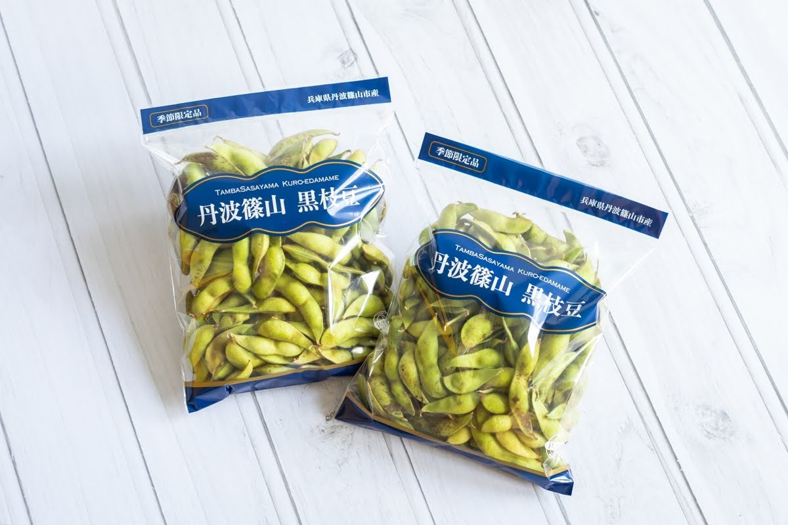
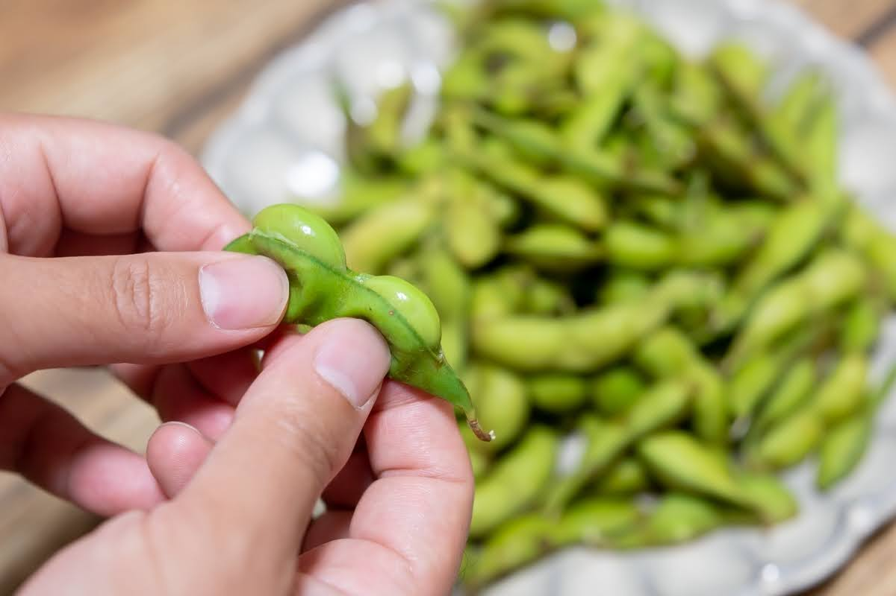
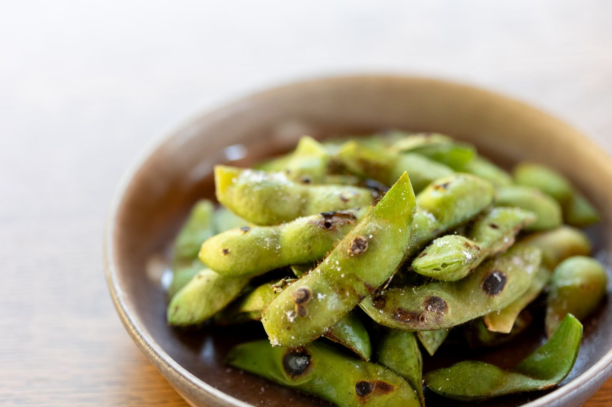

「一度食べたら忘れられない」
丹波篠山の秋限定、わずか数週間だけしか味わえない“幻の枝豆”――それが黒枝豆です。
丹波篠山ひなたファームでは、こだわりの土づくりで、黒豆が若いうちにしか味わえない絶品枝豆を、丁寧に栽培しています。
口に入れた瞬間広がる、深く濃厚な旨みと、ホクホクとした甘みのある食感。そのおいしさは、旬を知る食通をも唸らせます。
数量・期間ともに限られた特別な味覚。今年の秋も、どうぞお早めにご予約ください。